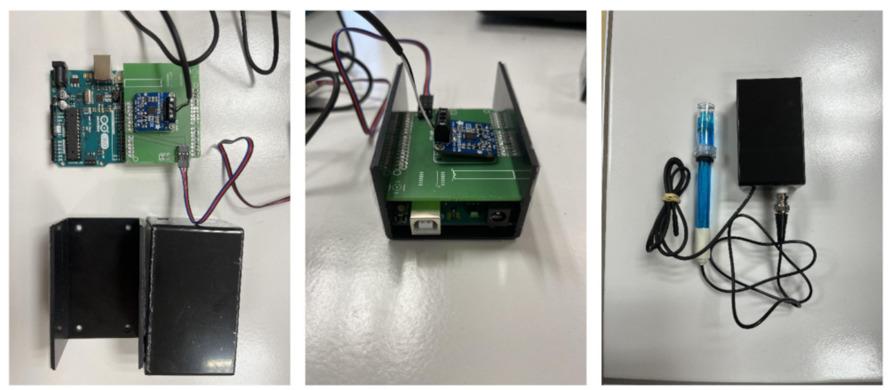

Documentation pH mètre
Ce programme permet de contrôler un ph-mètre arduino équipé d’une sonde de température PT100.
Il résulte d’un travail collectif effectué par des étudiants de Licence 3 de l’Institut de physique du globe de Paris.
Il est distribué sous la licence créative common CC-by-SA 4.0
- Pour le citer:
Chardon, T., Gauthier-Brouard, T., Lu, C., Palmieri, C., de Singly, V., Lumembe, O., Métivier, F., Baugas-Villers, O., Bijon, V., Charles-Nicolas, A., Chin, C., Fossaert, H., Hallé, S., Henry-Gonzalez, M., Le Liorzou, C., Leroy, L., Marchaland Le Bihan, S., Monti, V., Pasquet, T., Perrenx, L., Poirier, M., Sauvage, D., Sookwhan, N., & Thommy, G. (2024). SAFE-M-PH Un pH-mètre low cost pour l’enseignement [Computer software].
Installation
Emplacement du programme
La première étape consiste à installer le programme permettant d’utiliser le pH mètre. Ce programme est en accès libre sur le site internet GitHub sur le compte fmetivier.
Charger le répertoire
Afin d’utiliser le programme vous avez besoin de charger le répertoire dans lequel il se trouve. Ce répertoire contient l’ensemble des codes et dossiers nécessaires à la bonne utilisation des pH mètres.
Vous pouvez cloner le répertoire en saisissant directement dans le terminal la commande:
git clone https://github.com/fmetivier/pH_meter_V2.0.git
Note
Attention, avant d’importer le programme vérifiez bien que vous vous situez dans votre répertoire de travail.
Mise en place du pH mètre
Avant de lancer le programme, branchez le pH-mètre avec le cable d’alimentation à un des ports USB de l’ordinateur. Branchez ensuite la sonde pH sur le boitier du pH-mètre. Devissez le capuchon de la sonde, rincez la avec de l’eau distillée ou de l’eau claire si vous n’avez pas d’eau distillée à votre disposition. Séchez délicatement puis plongez le pH-mètre dans la solution à mesurer.
Démarrage du programme
Vous êtes maintenant prêt à faire fonctionner le pH-mètre. Vous devez avoir un dossier nommé pH_meter_V2.0, qui contient :
Programme pH mètre_V2.py:Il s’agit du programme principal permettant d’intéragir avec le pH-mètre au travers d’un interface dans le terminal.
lib_pH.py:Ce code contient l’ensemble des fonctions nécessaire au fonctionnement du programme principal.
DATA:Ces dans ce dossier que vont être enregistrées les données acquisent lors des mesures de pH.
CALIB:Ce dossier contient les données de toutes les calibrations du pH mètre effectuées, ce qui permet notamment de les réutiliser.
FIGURES:Comme son nom l’indique, ce dossier regroupe l’ensemble des graphique permettant de visualiser les données mesurées et de suivre l’évolution du pH des solutions analysées.
send_ph_T_Uno:Ce dossier contient le script à charger sur la carte Arduino permettant de communiquer les données de voltage et de température, mesurées par les sondes, à l’ordinateur.
Fritzing:Contient une image représentant l’agencement et le branchement des différents composants du pH mètre.
compare.py:Ce programme permet d’évaluer la précision et fiabilité des pH-mètres construits à partir de carte Arduino par rapport à un pH mètre de laboratoire Hanna.
__pycache__:Ce répertoire automatiquement créé par Python stocke les fichiers compilés des modules Python utilisés.
Mauel_d_utilisation_pH_metre.pdf:Cours manuel explicitant l’utilisation du pH mètre.
CITATION.cff:Métadonnées à utiliser pour citer cd logiciel si vous souhaités l’utiliser.
README.md:Documentation du pH mètre.
Essayons de lancer le programme pour voir comment celui-ci fonctionne. Saisissez simplement:
# A l'intérieur du dossier pH_meter_V2/
python3 'Programme pH mètre_V2.py'
Cela devrait lancer le programme dans le terminal et vous dire que vous que la connexion avec l’Arduino est établie, vous donner les paramètres de régression de la calibration par défaut du pH mètre ainsi qu’une figure de la courbe de calibration. De plus le programme affiche l’interface du MENU PRINCIPAL.
Vous devriez obtenir:
-> python3 'Programme pH mètre_V2.py'
/!\ Port de connexion non détecté. Merci de rétablir la connexion non établie : connexion au processeur dans les réglages avant utilisation.
Attention aucun arduino disponible
Les paramètres a et b de notre regression linéaire sont [0.01323408 2.15989141]
Pour un voltage de 600 le pH prédit est de 10.10033889796552
0.99985
===========================================================================
MENU PRINCIPAL
===========================================================================
Que souhaitez-vous faire ?
1 - Calibrer
2 - Mesurer
3 - Représenter graphiquement
4 - Quitter
===========================================================================
?
Avertissement
Si le pH mètre n’est pas correctement branché à l’ordinateur ou que l’Arduino ne parvient à se connecter au port d’accès un message d’erreur devrait apparaître de la forme:
-> python3 'Programme pH mètre_V2.py'
/!\ Port de connexion non détecté. Merci de rétablir la connexion non établie : connexion au processeur dans les réglages avant utilisation.
Attention aucun arduino disponible
Le programme est désormais lancé et le pH-mètre prêt à être utilisé.
La suite
Il est maintenant temps de passer aux étapes suivantes:
Calibration du pH mètre
Pour une meilleure exactitude, un étalonnage fréquent de l’instrument est recommandé. Un étalonnage est indispensable dans les cas suivants :
L’électrode a été remplacée
Au moins une fois par mois
Après avoir mesuré des produits chimiques agressifs
Lorsqu’une grande exactitude est requise
Préparation
Versez une petite quantité de solution pH 7,00 et pH 4,00 dans deux récipients propres. Pour une meilleure exactitude, il est conseillé de prendre deux récipients par solution, un récipient pour le rinçage et un autre pour l’étalonnage à proprement dit. Le choix des solutions étalons se fait selon l’utilisation, soit pH 7,00 et pH 4,00 dans le cas d’une calibration à deux tampons et pH 10,00, pH 7,00 et pH 4,00 dans le cas d’une calibration à trois tampons.
Procédure
Calibration à deux solutions tampons
Ôtez le capuchon de protection en bout de la sonde pH, rincez celle-ci avec de l’eau distillée puis immergez l’électrode dans une solution pH 7,00 ; agitez délicatement pendant quelques secondes ; immergez la sonde de température et attendez 2 à 3 minutes pour avoir un équilibre thermique correct.
Choisissez dans le menu interface l’option Calibrer en appuyant sur le chiffre 1 et en validant avec
la touche Entrée:
===========================================================================
MENU PRINCIPAL
===========================================================================
Que souhaitez-vous faire ?
1 - Calibrer
2 - Mesurer
3 - Représenter graphiquement
4 - Quitter
===========================================================================
?
-> 1
===========================================================================
MENU CALIBRATION
==========================================================================
Voulez - vous :
1 - Calibrer avec deux tampons (pH 7 et 4) ?
2 - Calibrer avec trois tampons (pH 7, 4 et 10) ?
3 - Calibrer à partir d'une calibration déjà existante dans le répertoire
4 - Quitter le menu calibration et retourner au menu principal
===========================================================================
?
Sélectionnez ensuite l’option Calibrer avec deux tampons de la même façon.
Validez une seconde fois lorsque vous serez prêt à mesurer le tampon à
pH 7,00. Le programme vous demandera alors de patienter une minute le temps que la sonde pH se
stabilise puis effectuera 100 mesures pour une durée approximative de deux minutes.
Une fois les mesures à pH 7,00 effectuées, rincez la sonde pH avec de l’eau distillée.
Plongez l’électrode dans la solution pH 4,00 et attendez quelques minutes pour la stabilisation de la mesure. Une fois prêt à mesurer le tampon à pH 4,00, appuyez sur la touche Entrée pour initier les mesures. Comme plus tôt, le programme vous demandera alors de patienter 1 minute le temps que la sonde pH se stabilise puis effectuera ses 100 mesures.
Une fois les mesures effectuées, le programme vous demandera:
’Voulez-vous visualiser la calibration (O/N) ?’
En répondant O, o, Y ou y, vous obtiendrez alors la courbe d’étalonnage de la calibration
que vous venez d’effectuer, ses paramètres et le coefficient de corrélation. L’étalonnage est alors terminé, vous pouvez passer
à vos Mesures du pH.
Si le programme juge que la calibration n’est pas satisfaisante (R2 < 0.95), il vous sera proposé de
recalibrer votre pH-mètre.
Si vous souhaitez recalibrer le pH-mètre, choisissez l’option 1.
Si vous souhaitez continuer ainsi et commencer à mesurer, choisissez l’option 2.
Calibration à trois solution tampons
Si vous souhaitez calibrer votre pH-mètre avec 3 solutions tampons la procédure est la même mais il vous faudra
continuer avec la solution pH 10,00.
Pour cela, choisissez dans l’interface MENU CALIBRATION l’option 2 - Calibrer avec trois
tampons:
===========================================================================
MENU CALIBRATION
==========================================================================
Voulez - vous :
1 - Calibrer avec deux tampons (pH 7 et 4) ?
2 - Calibrer avec trois tampons (pH 7, 4 et 10) ?
3 - Calibrer à partir d'une calibration déjà existante dans le répertoire
4 - Quitter le menu calibration et retourner au menu principal
===========================================================================
?
Calibration à partir de données enregistrées
Il est aussi possible de calibrer votre pH-mètre à partir de données de précédentes calibrations déja répertoriées dans le dossier CALIB.
Pour cela, choisissez dans le MENU CALIBRATION l’option 3 - Calibration à partir d’une calibration déjà exitante dans le répertoire.
Une liste de fichier vous est proposée de la forme:
===========================================================================
MENU CALIBRATION
==========================================================================
Voulez - vous :
1 - Calibrer avec deux tampons (pH 7 et 4) ?
2 - Calibrer avec trois tampons (pH 7, 4 et 10) ?
3 - Calibrer à partir d'une calibration déjà existante dans le répertoire
4 - Quitter le menu calibration et retourner au menu principal
===========================================================================
?
-> 3
Calibrations disponibles:
0 - ./CALIB/fichier_calibration_pH10.02 Tue Jun 25 16_23_38 2024.csv
1 - ./CALIB/fichier_calibration_pH10.03 Fri Jun 28 11_03_55 2024.csv
2 - ./CALIB/fichier_calibration_pH10.05 Thu Jun 6 14_51_13 2024.csv
3 - ./CALIB/fichier_calibration_pH10.04 Thu May 30 11_20_10 2024.csv
4 - ./CALIB/fichier_calibration_pH10.04 Thu Jun 6 12_36_05 2024.csv
5 - ./CALIB/fichier_calibration_pH10.04 Fri May 24 12_30_58 2024.csv
6 - ./CALIB/fichier_calibration_pH10.05 Thu Jun 6 14_36_13 2024.csv
7 - ./CALIB/fichier_calibration_pH10.04 Fri May 24 12_08_50 2024.csv
8 - ./CALIB/fichier_calibration_pH10.04 Thu Jun 6 14_21_31 2024.csv
9 - ./CALIB/fichier_calibration_pH10.06 Mon Jul 15 11_34_16 2024.csv
10 - ./CALIB/fichier_calibration_pH10.04 Mon Jul 15 16_06_37 2024.csv
11 - ./CALIB/fichier_calibration_pH10.05 Tue Jul 16 08_52_04 2024.csv
Choisissez votre calibration en entrant son numéro d'ordre:
Il suffit alors de renseigner le numéro d’ordre des données que vous souhaitez utiliser et valider avec la touche Entrée.
Note
Le fichier à sélectionner est de la forme ./CALIB/fichier_calibration_pH10.00 Day Month H_min_sec Year.csv mais implicitement
ceux correspondant à la même calibration pour les pH 4.00 et 7.00 vont aussi être utilisé.
Une fois le fichier renseigné la calibration sera effectuée, la droite de la calibration choisie apparaitra à l’écran ainsi que la courbe de l’évolution de l’écart-type des mesures au cours du temps. Vous pouvez maintenant effectuer vos Mesures du pH.
Avertissement
Assurez-vous que les fichiers que vous renseignez correspondent au format demandé :
un fichier csv, avec pour chaque ligne les informations temps(s);température(°C);voltage(mV):
0.00; 23.27; 180.00
0.25; 23.33; 180.00
0.51; 23.33; 180.00
0.76; 23.33; 180.00
1.02; 23.37; 180.00
1.27; 23.40; 180.00
1.52; 23.43; 180.00
1.78; 23.43; 179.00
2.03; 23.47; 180.00
...
Par défaut cela correspond au format des données de Mesures du pH.
Mesures du pH
Avertissement
Il est important que la solution à mesurer soit dans les mêmes conditions de pression mais surtout de température que les solutions tampons lors de la calibration, puisque la correction du pH en fonction de la température s’effectue pendant la calibration. Si la température de votre solution évolue au cours du temps une nouvelle calibration est nécessaire.
Préparation
Après avoir oté le capuchon de protection, plongez la sonde pH ainsi que la sonde de température dans la solution à mesurer. Agitez l’électrode pendant quelques secondes puis stabilisez-la.
Sélectionnez dans le MENU PRINCIPAL l’option 2 - Mesurer en appuyant sur la touche 2 de votre clavier
puis valider avec la touche Entrée.
Le programme vous demande alors si vous êtes prêt à initier les mesures, appuyez sur Entrée lorsque vous le serez.
Note
Pour avoir des mesures précises, il est nécessaire que l’instrument ait été étalonné au préalable. Si les mesures sont effectuées dans des échantillons successifs, il est recommandé de rincer l’électrode entre chaque échantillon, afin de ne pas contaminer les échantillons entre-eux.
Prise de mesure
Une fois l’opération lancée, 10 valeurs de pH sont mesurées, pour ces 10 valeurs le programme va afficher le temps (en secondes) de la prise mesure par rapport à l’initiation des mesures, la température moyenne et l’écart-type des mesures de température, le voltage moyen, l’écart-type des mesures de voltage, le pH moyen mesuré, l’écart-type des mesures de pH et enfin une valeur de la stabilité.
La stabilité est un coefficient qui représente l’ecart entre 10 valeurs de pH mesurées et les 10 valeurs mesurées précedentes. La mesure de la sonde est considérée comme stabilisée lorque que le coeffcient de stabilité est proche de zéro. Tant que la valeur du coeffcient de stabilité n’est pas satisfaisante le programme continue d’effectuer des mesures.
Une fois une stabilité satisfaisante atteinte, le programme arrête ses mesures et demande à l’utilisateur s’il souhaite continuer ou non la prise de mesures.
L’utilisateur a alors le choix de poursuivre les mesures en répondant par O, o, Y ou y. Le programme effectue alors 20 mesures
supplémentaires avant de reproposer de continuer ou non.
Si l’utilisateur juge que le nombre de mesures est suffisant et souhaite s’arrêter là, il répond alors à la question posée avec N ou n.
Le programme propose alors à l’utilisateur s’il souhaite voir la Représentation graphique des données qu’il vient de mesurer.
L’ensemble des mesures est enregistré dans un fichier csv de la forme fichier mesure Day Month H_min_sec Year.csv dans le dossier DATA.
Avertissement
Si vous souhaitez enregistrer l’évolution des valeurs de pH de vos données en fonction du temps référez-vous maintenant à la prochaine étape :
Mesures d’Alcalinité
Si vous souhaitez utilisez ces pH mètre pour une mesure d’alcalinité la procédure est la même mais poursuivez les mesures jusqu’à la fin de votre titrage avec l’option
Continuer les mesures (O/N) ?
-> N
Le titrage peut être considéré comme terminé une fois la valeur seuil de pH atteinte à pH 3.7.
Assurez vous que la mesure de pH soit bien stabilisée avant d’ajouter un nouvel incrément de HCl.
La représentation graphique de vos mesure aux termes du titrage ainsi que le fichier contenant les données
mesurées, enregistré dans le dossier DATA, vous permettront de déterminer l’alcalinité à partir des méthodes de
Gran et de Culberson.
Représentation graphique des données
Avertissement
Que ce soit à l’issue de votre prise de vos Mesures du pH ou pour des données plus anciennes, lorsque ce vous souhaitez enregistrer votre figure, ne fermer la fenêtre affichée par le programme la contenant qu’une fois avoir sélectionné l’option d’enregistrement:
Sauver (O/N) ?
-> O
Sinon vous n’enregistrerez qu’une page blanche.
Ce programme permet de représenter et d’enregistrer graphiquement les mesures
effectuées juste à l’instant ou lors de prises de mesures plus anciennes.
Selectionnez pour cela l’option 3 - Représenter graphiquement dans le MENU PRINCIPAL.
Le programme vous affichera la liste des données de mesures disponibles dans le dossier DATA:
===========================================================================
MENU PRINCIPAL
===========================================================================
Que souhaitez-vous faire ?
1 - Calibrer
2 - Mesurer
3 - Représenter graphiquement
4 - Quitter
===========================================================================
?
-> 3
fichiers disponibles:
0 - ./DATA/fichier_mesure Thu Jun 6 12_58_56 2024.csv
1 - ./DATA/fichier_mesure Thu Jun 6 12_03_47 2024.csv
2 - ./DATA/fichier_mesure Thu Jun 6 12_52_02 2024.csv
3 - ./DATA/fichier_mesure Thu Jun 6 12_04_58 2024.csv
4 - ./DATA/fichier_mesure Thu Jun 6 12_14_54 2024.csv
5 - ./DATA/fichier_mesure Fri Jun 28 11_19_49 2024.csv
6 - ./DATA/fichier_mesure Fri Jun 28 11_27_36 2024.csv
7 - ./DATA/fichier_mesure Thu Jun 6 12_46_56 2024.csv
8 - ./DATA/fichier_mesure Fri Jun 28 11_21_37 2024.csv
...
Il suffit alors de renseigner le numéro d’ordre des données que vous souhaitez utiliser et valider avec la touche Entrée.
Le graphique de vos données ainsi que l’histogramme des mesures associés vont s’afficher. Le programme va alors vous demander:
Sauver (O/N) ?
Il est possible si vous le souhaitez d’enregistrer le graphique obtenu dans le dossier FIGURES, il vous suffit alors de répondre avec les touches
O, o, Y ou y.
Le fichier sera alors enregistré au format pdf.
Documentation des fonctions
Created on Wed May 22 16:09:59 2024
@author ori: Clathi
- lib_pH.Calibration(buffers=[7, 4], n=200, port_test='')
Calibre la sonde pH pour 2 et 3 tampons (7, 4 et 10) en 100 mesures. Corrige les valeurs obtenues en fonction de la température.
- Paramètres:
buffers (list, liste) – DESCRIPTION. The default is [7, 4].
n (int, nombre de mesures) – DESCRIPTION. The default is 100.
- Renvoie:
model – DESCRIPTION. Les paramètres a et b de la courbe de calibration, a correspond au coefficient directeur et b à l’ordonnée à l’origine.
- Type renvoyé:
list, liste
- lib_pH.Calibration_existante()
Calibre la sonde pH pour 3 tampons (7, 4 et 10) à partir d’une calibration déjà existante, et présente dans le même répertoire que ce programme.
- Renvoie:
model – DESCRIPTION. Les paramètres a et b de la courbe de calibration, a correspond au coefficient directeur et b à l’ordonnée à l’origine.
- Type renvoyé:
list, liste
- lib_pH.default_Calibration()
Calibration par défaut de la sonde pH, effectuée en laboratoire.
- Renvoie:
model – DESCRIPTION. Les paramètres a et b de la courbe de calibration par défaut, a correspond au coefficient directeur et b à l’ordonnée à l’origine.
- Type renvoyé:
list, liste
- lib_pH.fn_settings(portIN, s, br, nb_inter, time_inter)
Configuration des paramètres modifiables par l’utilisateur.
- Paramètres:
portIN (string) – Identifiant du port série sur lequel le script doit lire des données.
s (serial.tools.list_ports_common.ListPortInfo) – Objet Serial sur lequel on peut appliquer des fonctions d’ouverture, de lecture et de fermeture du port série affilié.
br (int) – Flux de données en baud.
nb_inter (int) – Nombre de valeurs utilisées pour constituer une mesure (une mesure correspond à la moyenne de toutes les valeurs prélevées).
time_inter (float) – Temps d’intervalle entre chaque prélèvement de valeur au sein d’une mesure.
- Renvoie:
portIN (string) – Identifiant du port série sur lequel le script doit lire des données.
s (serial.tools.list_ports_common.ListPortInfo) – Objet Serial sur lequel on peut appliquer des fonctions d’ouverture, de lecture et de fermeture du port série affilié.
br (int) – Flux de données en baud.
nb_inter (int) – Nombre de valeurs utilisées pour constituer une mesure (une mesure correspond à la moyenne de toutes les valeurs prélevées).
time_inter (float) – Temps d’intervalle entre chaque prélèvement de valeur au sein d’une mesure.
- lib_pH.graph()
Fait un graphique ph =f(t) et T=f(t) avec barres d’erreurs à partir d’un fichier de mesures sélectionné dans le dossier ./DATA
propose la sauvegarde du fichier dans le dossier ./FIGURES au format pdf
- lib_pH.indiv_measure(port_test, model, n=10)
_summary_
- Paramètres:
model (_type_) – _description_
n (int, optional) – _description_, by default 10
- Type renvoyé:
tuple contenant les moyennes et écart types de température, voltage et ph de la solution
- lib_pH.measure(model, n_stab=20, port_test='', n=10)
Mesure le pH en se basant sur une calibration et renvoie l’évolution des écart-type au cours du temps.
effectue n mesure individuelles
- Paramètres:
model (list, liste) – Calibration utilisée. Par défaut les paramètres de courbe de calibration est a = 75.55116667 et b = -163.1275.
n (int, nombre d'acquisitions pour une mesure) – DESCRIPTION. The default is 10.
n_stab (int, nombre de mesures utilisées dans le calcul de stabilité)
"" (port_test =)
string
ouvert (port com)
- lib_pH.measurement(a, b, nb_inter, time_inter, s)
Mesure unique ou en série et enregistrement éventuel des données.
- Paramètres:
a (float) – Pente de régression linéaire entre pH et voltage mesuré.
b (float) – Ordonnée à l’origine de régression linéaire entre pH et voltage mesuré.
nb_inter (int) – Nombre de valeurs utilisées pour constituer une mesure (une mesure correspond à la moyenne de toutes les valeurs prélevées).
time_inter (float) – Temps d’intervalle entre chaque prélèvement de valeur au sein d’une mesure.
s (serial.tools.list_ports_common.ListPortInfo) – Objet Serial sur lequel on peut appliquer des fonctions d’ouverture, de lecture et de fermeture du port série affilié.
- Type renvoyé:
None.
- lib_pH.pH_sensor(nb_inter, time_inter, s)
Mesure du voltage du pH-mètre et de la température.
- Paramètres:
nb_inter (int) – Nombre de valeurs utilisées pour constituer une mesure (une mesure correspond à la moyenne de toutes les valeurs prélevées).
time_inter (float) – Temps d’intervalle entre chaque prélèvement de valeur au sein d’une mesure.
s (serial.tools.list_ports_common.ListPortInfo) – Objet Serial sur lequel on peut appliquer des fonctions d’ouverture, de lecture et de fermeture du port série affilié.
- Renvoie:
list_pH (list) – valeurs de voltages liées au pH et utilisées pour une mesure.
list_temperatures (list) – valeurs de températures utilisées pour une mesure.
- lib_pH.pH_temp_adjust(pH, temp)
Ajustement du pH étalon en fonction de la température par interpolation linéaire.
- Paramètres:
pH (int) – pH de la solution étalon.
temp (float) – température mesurée de la solution.
- Renvoie:
pH_adjusted – pH interpolé en fonction de correspondances entre pH et températures connues.
- Type renvoyé:
float
- lib_pH.plot_calib(voltage_values, buffers, errorbuffers_values, errorvoltage_values, t, EM4, EM7, EM10, predict, equation, R2)
Représentation graphique des calibrations
- Paramètres:
voltage_values (_type_) – valeurs de voltages de l’arduino
buffers (_type_) – valeurs des tampons
errorbuffers_values (_type_) – incertitudes sur les tampons
errorvoltage_values (_type_) – incertitude sur les voltages
t (_type_) – temps
EM4 (_type_) – _description_
EM7 (_type_) – _description_
EM10 (_type_) – _description_
predict (_type_) – fonction de prédiction pH=f(V)
equation (_type_) – equation de la calibration
R2 (_type_) – R2 de la calibration
- lib_pH.plot_mes(T)
Représentation graphique des séries de mesures
- Paramètres:
T (str) – date du fichier
- lib_pH.port_connexion(br=9600, portIN='')
Établit la connexion au port série.
- Paramètres:
br (int) – Flux de données en baud.
portIN (string) – Identifiant du port série sur lequel le script doit lire des données.
- Renvoie:
port (string) – Identifiant du port série sur lequel le script doit lire des données.
s (serial.tools.list_ports_common.ListPortInfo / string) – Objet Serial sur lequel on peut appliquer des fonctions d’ouverture, de lecture et de fermeture du port série affilié. En cas d’échec de connexion, “s” sera une chaîne de caractères « erreur ».